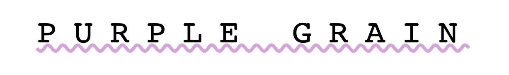

Week 4:
CSS Review and Advanced CSS introduction
Welcome to week 4 of Code Chica++! This class, we'll focus on getting your development enviornment set up, create a GitHub account, and establishing a foundation to build on when it comes to web development.
Weekly Challenge
Hipster Logo Exercise
I'm opening up a very hip artisanal vodka company called Purple Grain. Please help complete my incredibly ugly logo. Style the < h1 > with the following styles:
- uppercase all the letters, without touching the html! (note: you weren't taught how to do this, you will need to flex your googling skills)
- set the font-family to be 'monospace'
- center align the text
- set the font weight to 100
- make the text size 40px
- set spacing between letters to 20px
- add a wavy plum underline (plum is the color)
it should look like this once finished:
Make a pull request with your code to submit the challenge.